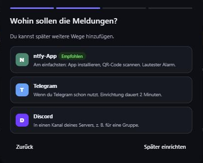
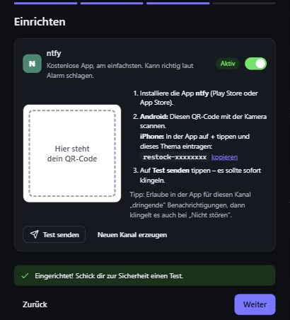
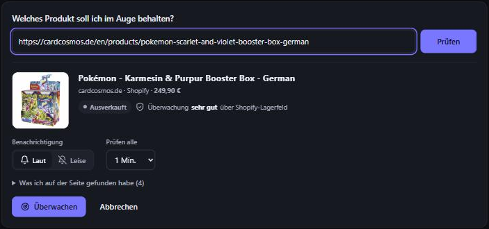
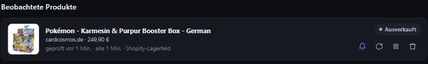
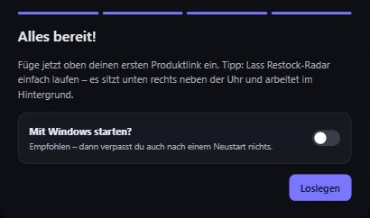
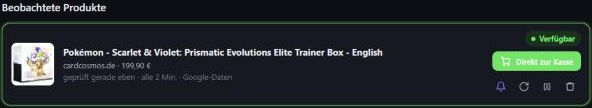

Einrichtung in 10 Minuten – für deinen Windows-PC und dein Handy
Restock-Radar schaut jede Minute auf die Produktseiten, die du ihm gibst. Sobald ein Artikel wieder lieferbar ist, klingelt dein Handy – mit Bild, Preis und einem Knopf „Direkt zur Kasse“.
Installiert wird nichts: Es ist eine einzige Datei, die unten rechts neben der Uhr im Hintergrund läuft.
Von Microsoft Defender SmartScreen wurde der Start einer unbekannten App verhindert. …
Weitere Informationen ← zuerst hier klicken
Der Assistent fragt, wohin die Meldungen sollen. Nimm ntfy-App – das ist am einfachsten und klingelt am lautesten.
restock-).

Lieber Telegram oder Discord? Einfach im Assistenten auswählen – die Schritte stehen dort direkt dabei.


Mehrere Produkte und Shops sind kein Problem – einfach weitere Links einfügen.
Restock-Radar prüft nur, solange dein PC an ist:
Das Programm sitzt dann unten rechts neben der Uhr (Radar-Symbol, evtl. hinter dem kleinen Pfeil). Klick öffnet die Oberfläche, Rechtsklick → Beenden schließt es. Das Browser-Fenster kannst du jederzeit zumachen.

Wenn ein Produkt wieder da ist, klingelt dein Handy. Tipp auf Direkt zur Kasse – bei Shopify-Shops liegt der Artikel dann schon im Warenkorb, du musst nur noch bezahlen.

| Problem | Was tun |
|---|---|
| Windows Defender meldet die Datei | Bei so gepackten Programmen kommt ab und zu ein Fehlalarm. In der Defender-Meldung zulassen – oder schick mir einen Screenshot. |
| Test-Nachricht kommt nicht an | In der ntfy-App prüfen, ob der Kanal abonniert ist, und in den Handy-Einstellungen Benachrichtigungen für ntfy erlauben. Dann nochmal Test senden. |
| Produkt zeigt „Gesperrt“ | Der Shop blockt automatische Abrufe (z. B. Amazon, Kaufland, eBay). Daran lässt sich nichts ändern – lieber kleinere Kartenshops beobachten. |
| Produkt zeigt „Gebremst“ | Der Shop hat kurz zu viele Anfragen bekommen. Restock-Radar wartet von selbst länger – nichts tun. |
| Kein Lebenszeichen am Morgen | Der PC war aus oder im Energiesparmodus – siehe Schritt 4. |
| Produkte vom Handy aus hinzufügen | Regler-Symbol → Handy-Zugriff im WLAN einschalten, QR-Code scannen. Fragt Windows nach der Firewall: Zugriff in privaten Netzwerken erlauben. |
| Neue Version bekommen | Rechtsklick aufs Radar-Symbol → Beenden, alte Datei durch die neue ersetzen (gleicher Ordner), neu starten. Produkte und Einstellungen bleiben erhalten. |
Restock-Radar · Stand November 2026